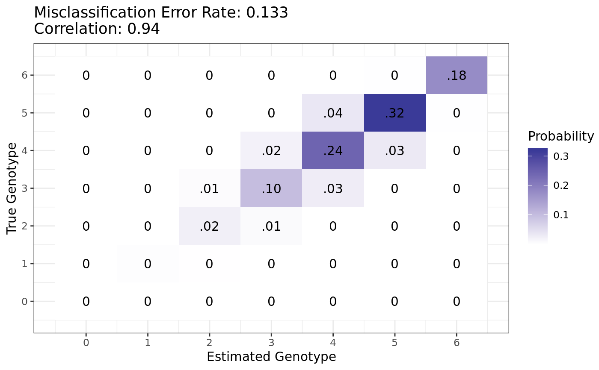

oracle_joint.oracle_plot.RdAfter obtaining the joint distribution of the true genotype with the estimated genotype from
the oracle estimator using oracle_joint, you can use oracle_plot to
visualize this joint distribution.
oracle_plot(jd)
| jd | A matrix containing the joint distribution of the true genotype and
the oracle estimator. Usually, this is obtained by a call from |
|---|
A ggplot object containing the oracle plot. The x-axis indexes
the possible values of the estimated genotype. The y-axis indexes the possible values of
the true genotype. The number in cell (i, j) is the probability that an individual will have
true genotype i but is estimated to have genotype j. This is when using an oracle estimator.
The cells are also color-coded by the size of the probability in each cell. At the top are
listed the oracle misclassification error rate and the correlation of the true genotype
with the estimated genotype. Both of these quantities may be derived from the joint distribution.
oracle_joint for obtaining jd.
ploidy <- 6 dist <- stats::dbinom(0:ploidy, ploidy, 0.75) jd <- oracle_joint(n = 100, ploidy = ploidy, seq = 0.001, bias = 0.7, od = 0.01, dist = dist) pl <- oracle_plot(jd = jd) print(pl)